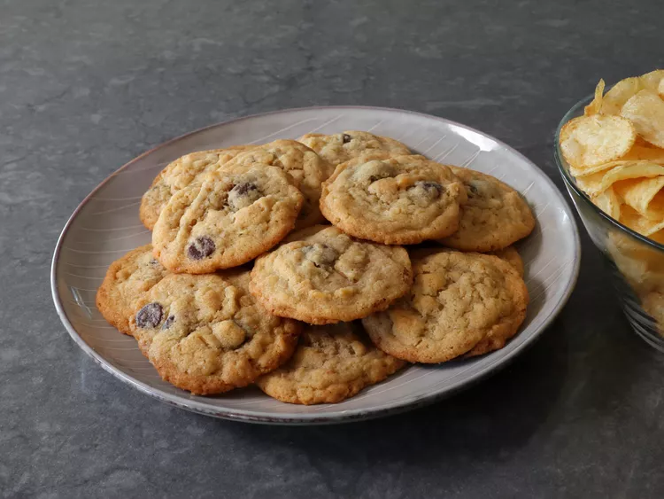

Description
These potato chip cookies are the most delicious and texturally fascinating chocolate chip cookies you’ll ever bake. They don’t taste like potatoes, in case you were concerned about that. The potato chips add flavor that pairs perfectly with the dark chocolate, and add a gorgeous color to the cookie—but it’s the texture that makes them truly irresistible.
Ingrediants
- 2 1/4 cups all-purpose flour
- 1 teaspoon baking soda
- 1/2 teaspoon salt
- 1 cup very soft unsalted butter (2 sticks)
Steps
- Whisk flour, baking soda, and salt together in a bowl; set aside.
- Beat butter, white sugar, and brown sugar together with an electric mixer until light and fluffy. Add egg and mix until fully incorporated and the mixture is smooth. Add milk and vanilla and repeat.
- Stir potato chips and chocolate chips in with a spatula until just combined. Add flour mixture; continue mixing in with a spatula until flour disappears and dough comes together
- Wrap and chill dough for about 30 minutes, or until ready to bake. Dough can be used immediately if desired.